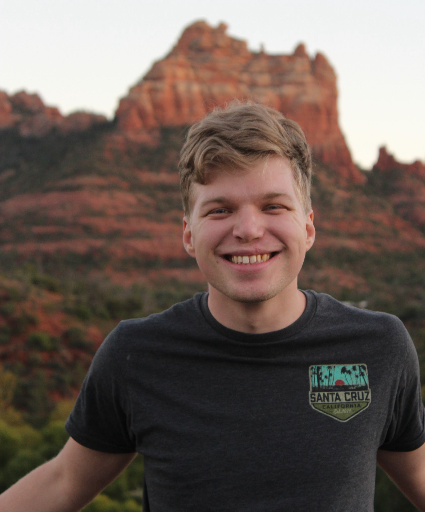

My Journey in Game Design
Hello! I'm Spazzy Llama, an aspiring game designer and developer with a passion for creating immersive and engaging interactive experiences. My journey into game development began with a fascination for how virtual worlds are built and the stories they can tell. I thrive on problem-solving and bringing creative ideas to life, from initial concept to polished prototype.
I specialize in (or am learning) **Unity Engine** development, with a foundational understanding of C# scripting. My interests span across various genres, including adventure, strategy, and indie games that push the boundaries of conventional gameplay. I believe that great games combine compelling narratives, intuitive mechanics, and artistic vision.
Skills & Expertise
- Game Design: Concept development, mechanics design, level design, narrative writing.
- Engine Proficiency: Unity Engine.
- Programming: C# (intermediate), basic JavaScript.
- Prototyping: Rapid prototyping, iterative design.
- Tools: Blender (basic 3D modeling), Adobe Photoshop/Illustrator (basic image editing).
- Soft Skills: Problem-solving, teamwork, communication, adaptability.
What's Next for Spazzy Llama?
I'm continuously learning and exploring new technologies and design philosophies. My goal is to collaborate with passionate teams to create impactful games that resonate with players. I'm always open to new opportunities and challenges!
Feel free to reach out if you'd like to discuss game design, potential collaborations, or just share your favorite indie game!